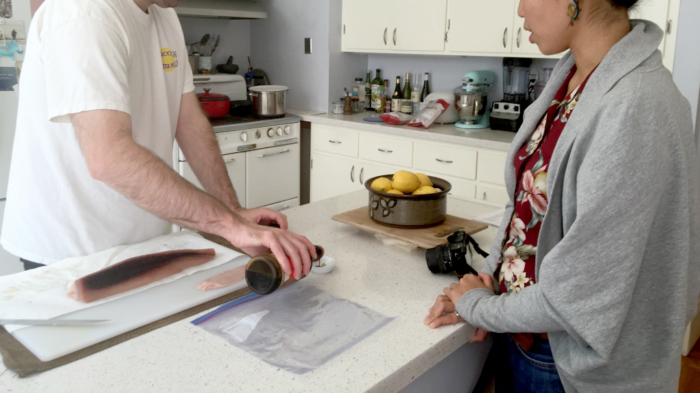
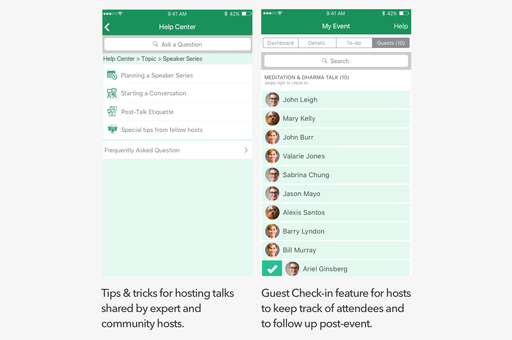
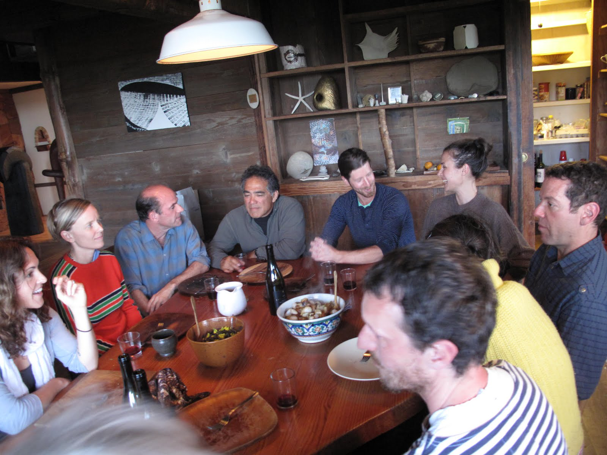

Nextdoor's Speaker Series
Conceptual Project
April, 2016
Business Goals
Nextdoor, a social network for neigbors, wants to increase user and community engagements by creating a program called the Speaker Series, a service that allows a community member to open up their homes to host talks by thought leaders.
Team
I worked alongside with another teammate. My role was the UX designer with additional focus on UI & Visual Design.
Tools & Methods
Concept design; Interaction design for mobile app; Survey Design; User interviews; Affinity Mapping; Journey Mapping
User goals and needs
The dilemma between social needs & lack of resources
Preliminary survey shows that users are willing to host talks at home but worry that guests won't have a good time given the lack of time, resources and knowledge of hosting.
“It hurts to think that my guests are not enjoying my party!”
To better understand how to help hosts, we conducted 6 user interviews:
Then, we used Affinity Mapping to synthesize data,

and we found 3 main painpoints & motivations:
- Forming deeper connection with neighbors over shared interest is the main motivation for hosting a community event at home.
- People have trouble managing logistics of hosting community events.
- People have anxiety over how to provide a delightful experience for guests.
Based on our synthesis, we created 2 personas -- Young future thought leader & Busy Working Professional, -- and
Our Solution
Our solution was to create a flow on the app that allows users to enjoy the intellectual exchange with thought leaders and neighbors without feeling anxious about the hosting itself.
User Interface
All features designed to remove friction from hosting experience.
- PRE TALK -
1. Search for Speakers based on Interests.
Research showed that interesting topic was the main reason for people to either host or attend a talk at home. Therefore, we designed the UI that allows users to search for a speaker by theme.
2. Event Creation Flow Designed to Address Users' Concerns.

3. Pre-event Management Flow for Users to Keep Track of Updates and Action Items Before the Talk

- DURING THE TALK -
4. Event Management UI During the Talk For Host to Stay Organized.
Future Plan
These are several future steps that Nextdoor can take to improve users’ experience even further:
1. New service: Dine with a thought leader
To alleviate some uncertainties, we recommended an idea called “dine with a thought leader” where interested hosts can sign up to have a round table discussion with their desired speaker, because food always bring people closer together :-)!
2. Research on attendees.
We believe more research on the attendees will definitely increase the overall experience of Nextdoor’s Speaker Series.